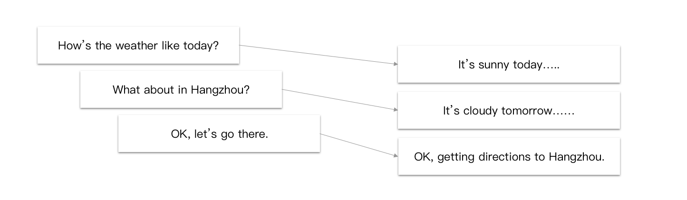
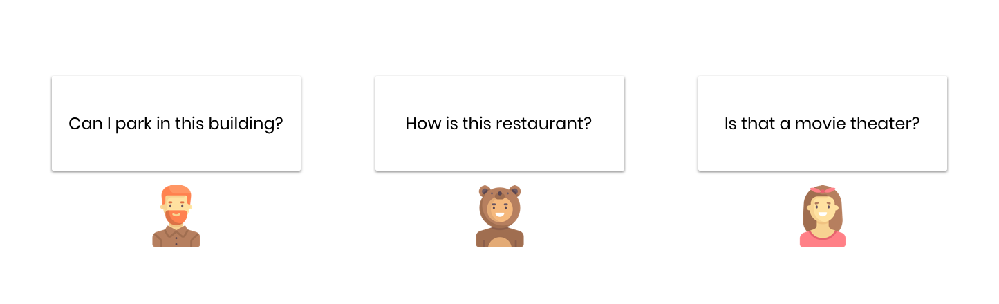
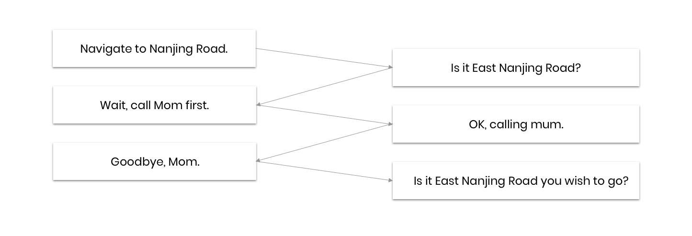
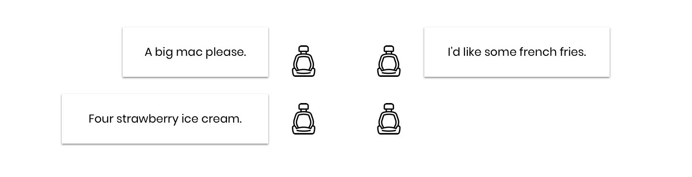
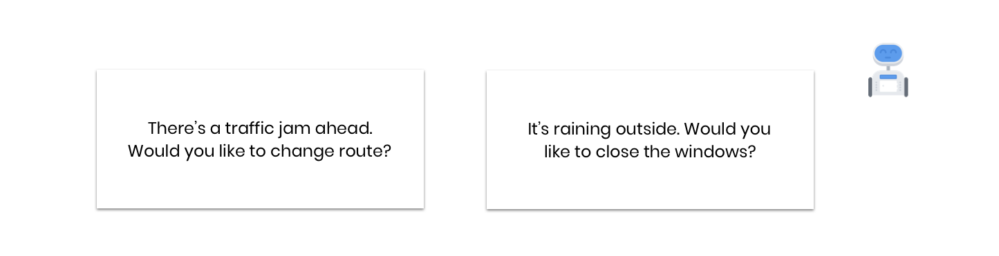
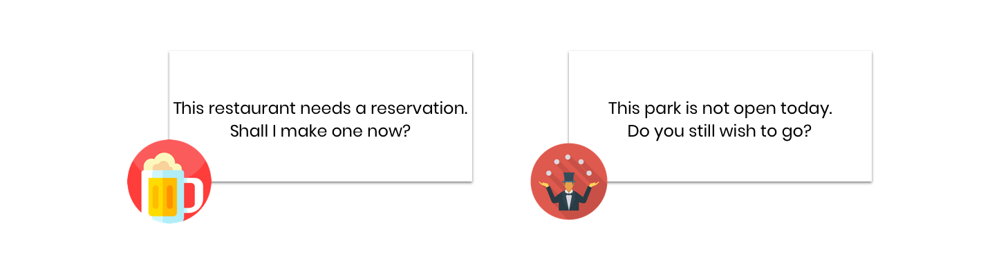

DemoCar
Use Case Design, Showcase to customers
DemoCar is a 6-seat MPV. We take customers for a ride and introduce our products to them.
Conversational Dialogue

It makes the conversation easier and more natural. User can have a longer conversation with the agent.
Gaze

One modality cannot help with everything. It becomes easier to mention unknown places, when 'gaze' had joined the game.
Flexible Dialogue

Users are no longer restricted to the dialogue. They can start another conversation quickly and can still come back to the previous one.
Multi Intent

When users are getting used to VUI, they will become expert users. And multi intent helps a lot with efficiency.
Multi Seat

Users can order food and play games with a multi zone solution. It's also helpful for tele conferences.
Proactive Dialogue

A smart agent should not always wait for commands. It needs to think of the user proactively.
Machine Association

The great mystery of human brain is the ability to associate. What if we bring that to the machines?